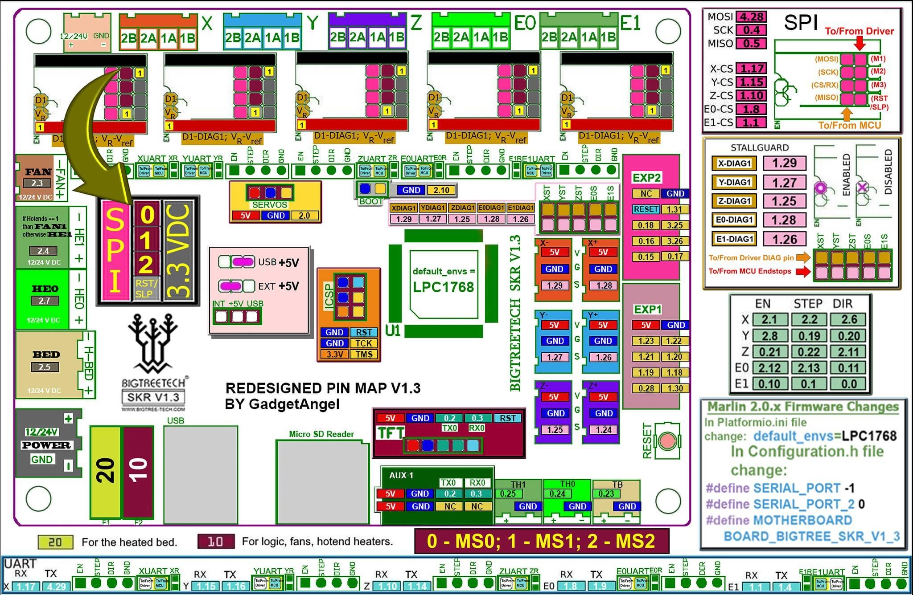

Voron V1 - SKR 1.3 Wiring
Initial Preparation
- Reconfigure the on-board jumpers as shown.

MCU
- Place stepper drivers for X, Y, Z, Z1, and E in positions X, Y, Z, E0, and E1
- Plug in stepper motors for X, Y, Z, Z1, and E in positions X, Y, Z, E0, and E1 (one of the Z connectors will be empty)
- Plug Hot End thermistor to thermistor TH0 (P0.24)
- Plug Hot End heater in to HE0 (P2.7)
- Plug Hot End Fan + Controller Fan in to HE1 (P2.4)
- Plug Bed Heater thermistor in to TB (P0.23)
- Plug SSR Control for Heated Bed in to Servos (P2.0)
- Plug Part Cooling Fan in to Fan (P2.3)
- Connect X end stop to X-STOP connector (P1.28)
- Connect Y end stop to Y-STOP connector (P1.26)
- Connect Z end stop to Z-STOP connector (P1.25)
- Plug Probe PWR and GND into FAN2
- Plug Probe Signal (with BAT85 diode) in to Probe (P0.10)
- Plug in Exhaust Fan in to HB (P2.5)
- Plug display wires in to EXP1 and EXP2
- Wire 24V and 0V from DC power supply to Power In
- Connect USB Cable to your SKR 1.4, but do not connect it yet to your Raspberry Pi

SKR 1.3 Pinout
For reference, here is the pinout of the SKR 1.3
